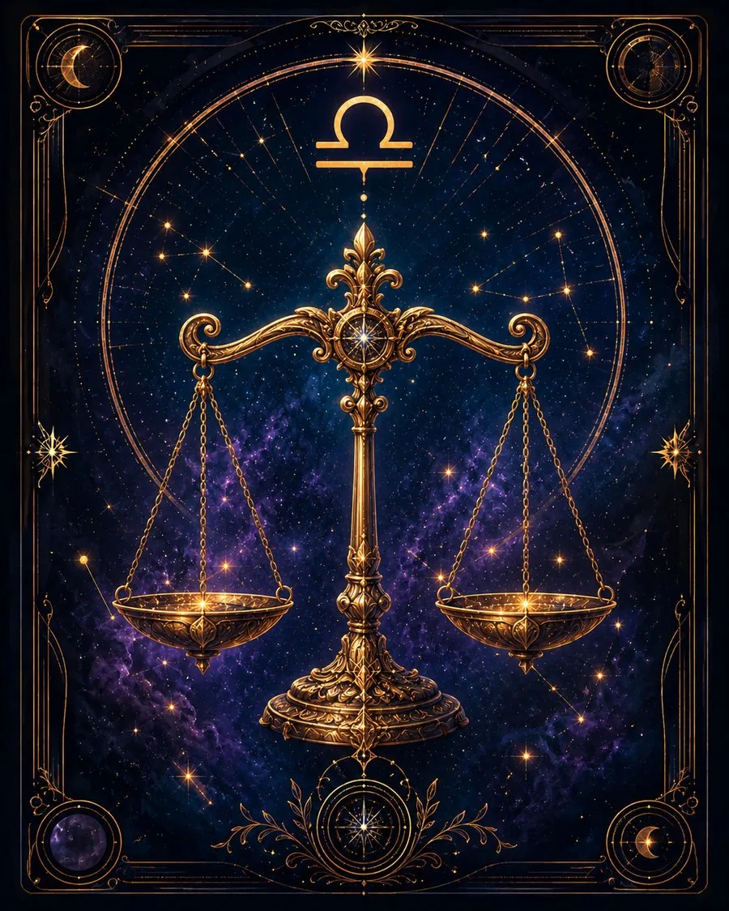

В двух словах
«Давайте посмотрим на это с обеих сторон».
Какой это человек
Весы естественно видят противоположную точку зрения. Для них важны партнёрство, справедливость, обмен мнениями, гармония и возможность найти решение, которое учитывает интересы обеих сторон.
Что им движет
Поиск равновесия.
Сильные стороны
Дипломатия, умение договариваться, чувство меры, социальная чуткость, эстетика, способность видеть несколько точек зрения.
Слабые стороны
Нерешительность и склонность слишком долго взвешивать варианты.
В отношениях
Партнёрство — одна из центральных тем. Через отношения Весы часто лучше понимают и самих себя.
В работе и деньгах
Сильны в переговорах, консультировании, сотрудничестве, искусстве и сферах, где требуется баланс интересов.
Когда всё плохо
Избегают решения ради внешнего мира, даже если проблема от этого только растёт.
Главное внутреннее противоречие
Хотят учитывать мнение другого человека, но должны научиться не терять собственное.
Это обобщённое описание солнечного знака, а не полный портрет человека. В реальной натальной карте характер зависит не только от Солнца, но и от других факторов.